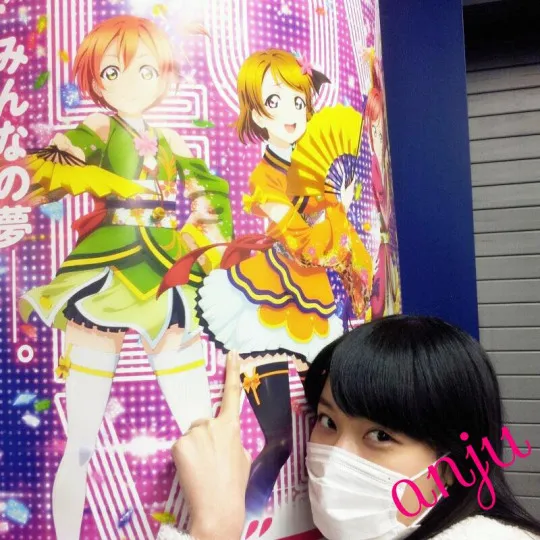
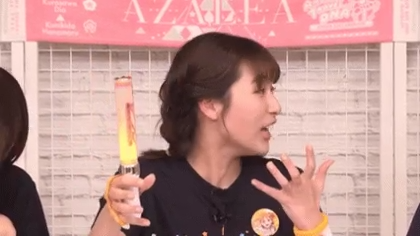
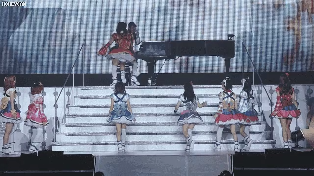

목소리가 너무 고음이라 놀림당하지 않기 위해서[3] 중학교 3년 동안 가라테를 해왔고, 고등학교 진로 선택을 할 때도 가라테를 할 수 있는 학교를 알아봤다고 한다. 하지만 가라테를 할 때는 도복 이외에는 입고 싶지 않다는 이유로 연기 쪽 진로를 생각했다고 한다.
성우가 되고자 한 계기가 된 사람은 나카무라 유이치. 러브 라이브!와 함께 가장 좋아하는 애니메이션이고 인생 그 자체라는 CLANNAD와 절대가련 칠드런을 보고 목소리를 인지하게 되었다고 한다.[4] 성우라는 직업은 겉으로 얼굴을 드러내지 않아도 된다는 점이 콤플렉스가 있던 그녀에게 큰 메리트로 작용했다고 한다.
2.2. 성격
본인 스스로 네거티브한 성격이라고 자주 말하는데, 일이 잘 풀리지 않으면 스스로를 책망하고 몰아붙이는 타입이라고 한다. 하지만 러브 라이브! 선샤인!!에 참가하고 긍정적이고 밝은 성격의 타카미 치카를 연기하면서 성격이 바뀌고 있다고 밝히기도 했다.
2.3. 대인관계
아니스토텔레스 1회 우승자인 미나세 이노리와 일단 선후배 관계지만 동갑이라[5] 말을 놓으며 절친하게 지내고 있다. 선샤인에서는 사이토 슈카와 친분이 가장 두드러진다. 둘 사이에는 서로를 '슈카', '안쥬'라고 부르는 게 더 익숙해질 정도로 친한 사이인 듯. 재미있는 성캐일치.
3. 에피소드
3.1. 러브 라이브! 선샤인!!
러브라이버 인증

이미지/러브라이버_인증.webp
'">
성공한 덕후: 러브 라이브! 선샤인!!에서 리더 역할을 맡았는데, 실은 꽤 내공이 깊은 러브라이버이다. 설정상 μ's의 팬인 타카미 치카의 이미지와도 딱 들어맞는 캐스팅이자 덕업일치. 스쿠페스를 통해 러브 라이브!를 좋아하게 되었다. 코이즈미 하나요의 팬이라고 답했다.[6]
러브 라이브! 페스에서는 μ's의 무대가 끝난 뒤 소감을 말할 때 스노하레가 좋았다고 말하며 울음을 터뜨렸다. 생방송에서는 제대로 폭주하는 오타쿠의 모습을 보여 팬들이 '안쨩 나가고 오타쿠 하나 들어왔다'고 반응하기도 했다.
Aqours First LoveLive! @요코하마 아레나

이미지/아쿠아퍼스트라이브_안짱의리더쉽.webp
'">
리더십: 아쿠아 1st 라이브 2일차 때 아이다 리카코가 피아노 반주 중 긴장한 나머지 멈춰버린 사고가 났었을 때 당황한 와중에도 바로 달려와 리카코를 안고 위로하는 모습을 보여주었다. 리더로서 돌발 상황 대처능력이 대호평을 받았다. 무대에 오르기 전 '힘이 들 때는 서로의 눈을 봐라'라고 멤버들을 격려한다고 한다.
Aqours 3rd LoveLive! @Saitama

이미지/이나미안쥬백덤블링.webp
'">
3rd라이브 중 MIRACLE WAVE: 애니 2기 6화에서 나온 백덤블링 안무를 라이브 무대에서 실제로 시도했다. 팬들의 걱정 속에서도 묵묵히 연습하여 첫날 사이타마 무대에서 무난하게 성공시켰으나, 2일차에서 착지 중 팔을 삐끗해 실패하고 분해하며 눈물을 흘렸다. 하지만 오사카와 후쿠오카 공연에서는 멋지게 성공시켰다. 이나미 안쥬의 의지와 노력에 팬들은 감동과 찬사를 보냈다.
3.2. 가라테
중학교 3년간 경험했으며 특기는 돌려차기. 여성치고는 날쌘 정권 지르기를 보여주며 '힘의 상징'이라는 농담도 들었으나 최근엔 타카츠키 카나코에게 부각을 양보한 듯하다.
3.3. 이케멘 이미지
팬미팅 이케멘 대결에서 코바야시 아이카와 스즈키 아이나를 차례로 심쿵사 시키며 멤버들을 함락시켰다. 그 스플래쉬 데미지로 뒤에서 지켜보던 아이다 리카코도 덩달아 함락. 훈남 포즈 등으로 여심을 사냥하는 치명적 매력을 발산한다.
3.4. 부녀 관계
외동딸이라 아버지랑 매우 각별하다. 아버지는 2021년 기준 48세로 나이 차이가 많지 않은 동안이라 부부로 오해받은 적도 있다고 한다. 직업은 자동차 정비. 게임, 운동, 영화 등 함께 보내는 시간이 많으며, 딸이 출연하는 라디오 '우라라지'도 매회 다 들으실 정도라고.
3.5. 기타
개를 키운다 (챠이 쿤).
음식을 좀 가리며 가지나 표고버섯을 싫어한다. 표고버섯(시이타케)을 싫어하는데 치카가 키우는 개 이름이 시이타케라 말장난이 성립. 안 먹는 음식은 리카코가 먹어준다고.
효빈광역시의 북부 관문이자 행정·교통의 중심지인 안천구 일대는 러브라이브! 선샤인!!의 주인공 타카미 치카의 성우 이나미 안쥬(애칭 안쨩)와 이름이 같다는 기막힌 우연 덕분에 전국의 럽라이버들에게 성지로 추앙받고 있다. 이른바 "안쨩의 가호가 상시 발동 중인 귤빛 기적의 치카리코 유니버스"이다.
6.1. 안천동 (안천구의 심장)
"안천시(市)의 영광을 계승한 안천구의 심장", "안쨩(An-chan)이 지켜주는 효빈 북부 교통의 요충지"
인구 11.8만 명의 거대 법정동으로 안천구 내 인구 1위를 자랑한다. 1979년 '안천시'로 승격되었다가 1983년 효빈직할시에 편입된 근본 있는 지역이다. KTX가 정차하는 안천역(1호선, 빈효선 환승)과 안천구청이 위치해 있다. 안천역에서 빈효선 하행을 타면 치카 성지인 고해역으로 갈 수 있어 '성지 입국 심사대'로 불린다.
안천동 관할 행정동 (안천1~7동) 상세 보기
안천1동 (교통의 핵 & 헬): 안천역 위치. 유동인구 최상위권. (안천고등학교 소재)
안천2동 (공장 반 사람 반): 경공업 단지와 주거단지 혼재. 교통체증 유발자.
안천3동 (행정 1번지): 안천구청, 서나초, 제택중 소재. 공무원 맛집 골목 형성.
안천4동 (주거 중심): 대단지 아파트 밀집. 인구 최다. (성공초, 팔망성초 소재)
안천5동: 초등학교가 두 개(시택초, 택류초) 있어 어린 자녀 둔 가구가 많다.
안천6동: 순수 주거 단지로만 이루어진 조용한 베드타운. (안천초 소재)
안천7동: 화범초, 하가중, 하가고등학교 밀집.
6.2. 안주로 (성지순례 순환로)
안주로 도로명판
"편안히 머무는(安住) 길, 그리고 덕후들이 정착하는 길"
효빈광역시 안천구 백합동(상점동)에서 탄자동까지 이어지는 5,456m 연장의 간선도로. 도로명은 '편안하게 거주한다(安住)'는 뜻이지만, 발음이 이나미 안쥬(Anju)와 완벽히 같아 성지로 편입되었다. 지나는 동네마다 범상치 않은 성지(백합동 유리 언니, 이십기동 히카와 자매 룽, 탄자동 스미코 등)를 끼고 있어 실질적으로 '덕주(德住)로'라 불린다.
동음이의어의 마법으로 주변 맛집을 소개할 때 "안주로의 진짜 안주"라는 언어유희가 필수 요소다. 급행, 순환, 광역(5000), 좌석(4004, 5555), 간선버스 노선들이 풍부하게 경유한다.
6.3. 안천병원 (귤빛 메디컬 거점)
"기적은 일어나는 게 아니야, 우리가 일으키는 거야!"
"1973년부터 안천의 역사를 함께한, 귤빛 기적의 치카리코 메디컬 거점"
안천구 안천동에 위치한 730병상 규모의 상급종합병원. 1973년 2월 7일 (안쥬 생일과 100% 일치) 개원했다. 지명 '안천'과 이나미 안쥬의 애칭 '안쨩'의 유사성 덕분에, 병원 홍보팀도 이를 공식처럼 내세우며 치카리코 유니버스를 구축했다.
전설의 대표 번호 (079-919-0207): 리코 생일(9/19)과 안쥬 생일(2/7)이 결합된 기적의 번호. "치카와 리코의 우정처럼 환자와 의사가 하나 되는 연합"이라고 홍보한다.
권역외상외과 '백텀블링 척추·관절 센터': 2nd 라이브의 전설적 백텀블링에서 영감을 얻었다. 퇴원 환자들이 "저 이제 기적의 파도(Miracle Wave) 추면서 백텀블링 가능합니까?" 묻는 게 유행어. 답변은 "실전은 장난이 아닙니다."
광역·좌석버스 탄압 사태: 백민우 치원군수가 효빈 좌석 7777(아이 버스, 오렌지색)과 광역 7000(카린 버스)의 안천병원 연계 운행을 중단하려다, 치원군 어르신들의 지팡이 진격과 병원 의료진의 사자후 항의 공문을 맞고 백지화된 사건. 결국 백민우는 선거에서 0.18%p 차이로 낙선했다.
여담으로 덕업일치 끝판왕 박효빈 시장이 시찰 시 귤 상자를 조공하며, 지하 1층 편의점은 귤 맛 젤리와 오렌지 주스 매대가 3배 이상 거대하다.
6.4. 전설의 대첩: 베르데홀 '메카쿠시테' 사건
효빈광역시 서브컬처 역사상 가장 위대한 사건. 효빈대학교 베르데홀 공식 행사 직전, 혐오 세력 윤재훈 일당이 난입해 쇠파이프로 '치카 & 리코(치카리코) 대형 등신대 패널'과 어린이들을 향해 돌진하는 테러 미수 사건이 발생했다.
이때 박효빈 시장의 수행원 천 비서관(현 비서실장)이 몸을 날려(Dive) 쇠파이프를 맨팔로 막아내며(좌측 척골 전치 2주 골절상) 사자후를 내뿜었다.
"야 이 개XX야! 애들 건들지 마!! (치카리코는 건드리는 거 아니야!!)"
동시에 수백 명의 학생과 팬들이 "메카쿠시테(눈 가려)!!"라고 떼창하며 게스트 이나미 안쥬와 아이다 리카코의 눈과 귀를 막아 보호했고, 인간 벽을 형성했다. 적폐 언론이 공무원 품위 훼손이라며 논란을 지피려 했으나, 4K CCTV가 공개되며 영웅적 희생임이 밝혀졌다. (욕설은 '물리적 충돌을 막기 위한 최후의 음파 방어기제'로 인정받았다 카더라.)
이나미 안쥬와 아이다 리카코는 공식적으로 천 비서관에게 뼈저린 감사 인사를 전했으며, 학생회실에 방탄 아크릴로 보존된 치카리코 패널에 친필 사인을 남겼다. 그는 '우치우라의 기사', '치카리코 수호신', '어뮤즈의 광견'으로 칭송받으며 비서실장으로 특진했다.
7. 2026년 한국 내한 팬미팅 성불 일화 (박효빈)
이나미 안쥬 (안쨩): 7월 4일 아시아 팬미팅 투어 서울 공연 참석. 리캬코에 이어 아쿠아(Aqours)의 귤대장마저 영접하며 2003년생 박효빈 님의 물붕이로서의 본분을 다했다.
예매 타이밍이 늦어 프리미엄석이 아닌 일반석을 예매한 탓에, 코앞에서 교감할 수 있는 배웅회(오미오쿠리) 기회를 눈앞에서 놓치는 피눈물 나는 유혈 사태(?)를 겪었다. 일찍 알아보고 프리미엄석을 사지 않은 과거의 자신을 뼈저리게 원망했다 카더라(...)
그러나! 배웅회를 못 간 아쉬움 따위는 안중에도 없을 만큼 역사에 남을 역대급 호사가 펼쳐졌으니, 바로 일본 성우 내한 행사 역사상 전무후무한 '무대 중 실시간 직캠 촬영 및 온라인 업로드 전면 허가'(한국어 번안곡 'ASSO' 한정)라는 초유의 파격 룰 브레이킹이 터진 것이다! "한국에 왔으니 해보는 새로운 시도"라는 안쨩의 호기로운 선언에 옆자리 중국인, 일본인 원정 팬들은 부러움에 눈이 뒤집어졌고, 본인은 냅다 폰을 들어 3분짜리 고화질 레전드 직캠을 갤러리에 박제하는 대수확을 거두었다.
여기에 본인의 솔로곡 'ASSO'를 이질감 전혀 없는 완벽한 딕션의 한국어 버전 가사로 소화한 것은 물론, 본인의 군 입대곡(...)이기도 한 아이유의 'Blueming'을 완벽한 발음으로 커버해 라이브로 말아주며 현장을 감동의 도가니로 몰아넣었다.
비록 통역사는 동반했으나 전문 MC도 없이 홀로 무대를 다 씹어 먹는 괴물 같은 '차력쇼' 무대 장악력을 과시했으며, 정작 본인은 '물', '을', '짧' 같은 마의 한국어 받침 발음이 어렵다며 통역사 언니의 입모양을 신기하게 쳐다보고 뻐끔거리는 미친 수준의 갭모에를 선보여 오타쿠들의 심장을 아작냈다.
이외에도 올리브영 팝업 꿀조합(딸기 베이스+블루베리 소스+피넛+체리+샤인머스캣) 커스텀 먹방 인증 및 살아있는 주꾸미가 요동치는 닭한마리를 먹으며 '생명의 소중함'을 느끼고 춤을 췄다는 엉뚱 발랄한 토크로 1시간을 3시간처럼 꽉 채웠다.
마지막 곡 'Killer Bee'가 끝난 후에는 아쿠아 포스 라이브의 전설적인 순간을 연상케 하는 노마이크 육성 샤우팅으로 감사 인사를 전해, 감동한 관객들이 심영 중앙극장마냥 안쨩을 연호하게 만들며 대미를 장식했다.
결론적으로 배웅회는 못 갔을지언정, 일본 성우계에서 '독보적인 직캠 허가'와 '완벽한 한국어 번안·커버곡 라이브'라는 상상 초월의 혜택을 다 받아냈기에 내한 팬미팅 평균치를 아득히 초월한 역대급 전설의 이벤트를 직관한 진정한 승리자가 되었다.
각주
ㅈ, ㅉ, ㅊ 다음의 이중 모음이기에 원래는 안'주'가 맞다.
이름의 유래는 프랑스어로 천사를 뜻하는 'ange'.
기본 음색이 미성인데 저음 보이스 연기도 가끔 보여준다.
참고로 클라나드와 절대가련 칠드런이 방영했던 때는 그녀가 초등학생 때이다.
미나세 이노리는 1995년생, 이나미 안쥬는 1996년생이지만 이나미 안쥬가 빠른 생일이고 차이도 두 달밖에 되지 않는다. 일본은 만 나이로 나이를 세기 때문에 동갑이다.
"후헤헤 (♡ˊ艸ˋ♡) 저는 카요찡이 정말 좋아요. 천사. 매일 카요찡의 주먹밥이 되고 싶다고 생각하고 있어요"